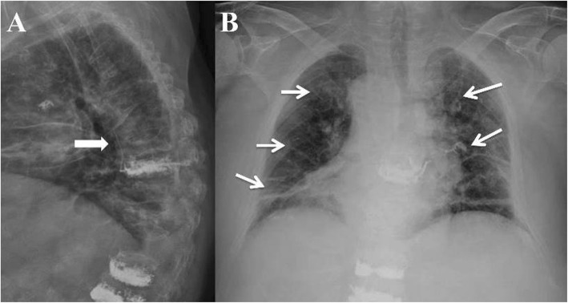
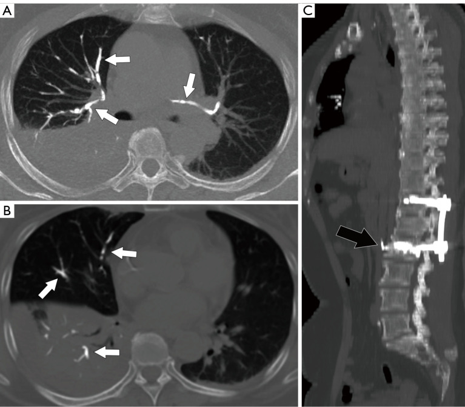
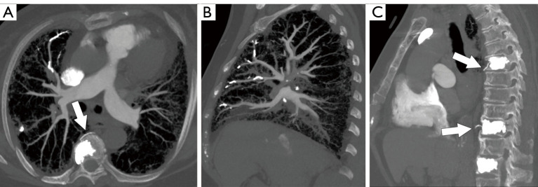
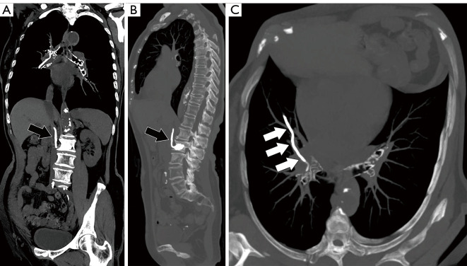

3019 — Thuyên tắc phổi do xi măng sau bơm đốt sống: đọc CT đúng, phân độ trung tâm/ngoại vi, khi nào chống đông – lấy dị vật
Tags: pattern:thuyen-tac pattern:tang-dam-quang pattern:di-vat vung:dong-mach-phoi vung:cot-song protocol:CTPA protocol:vertebroplasty incidentaloma:thuyen-tac-phoi
Mức chắc chắn (certainty): tổng hợp y văn (literature synthesis) — ghép cohort 3.175 ca vertebroplasty (PMC6884871), nghiên cứu 373 ca PVP/PKP có CT ngực sau mổ (PMC10102772), tổng quan hệ thống 1.974 ca sau vít xi măng (PMC9964565), tổng quan quản lý thuyên tắc xi măng (PMC5913032), ca tiến triển muộn 5 năm (PMC12663832) và 2 ca thủng tim (PMC8867418). Nhiều nguồn, không phải một ca → không gắn nhãn ca nguyên văn.
Bài này trả lời câu hỏi thực hành: “bệnh nhân vừa bơm xi măng, khó thở — trên CT thấy vật cản quang trong động mạch phổi; đây là thuyên tắc xi măng hay huyết khối, và có cần can thiệp lấy ra không?” Chốt nằm ở hình dạng ống/phân nhánh + mật độ > 500 HU, vị trí trung tâm hay ngoại vi, và triệu chứng. Nối 3017 – Gãy nén đốt sống & bơm xi măng (nguồn gốc), 091 – Ho ra máu ồ ạt và 094 – Ho ra máu từ động mạch phổi.
1. Tổng quan bệnh học – cơ chế hình ảnh
- Cơ chế: polymethylmethacrylate (PMMA) được bơm vào thân đốt sống dưới áp lực. Nếu xi măng rò vào tĩnh mạch đốt sống (basivertebral vein), tĩnh mạch phân đoạn (segmental vein), đám rối tĩnh mạch cạnh sống hoặc tĩnh mạch chủ dưới/azygos, dòng máu đưa xi măng về nhĩ phải → thất phải → động mạch phổi. Đây là dị vật, không phải cục máu đông: xi măng không tan, không tiêu theo thời gian.
- TẠI SAO CT thấy rõ: PMMA pha barium hoặc zirconium có hệ số hấp thụ tia X rất cao; định nghĩa thực hành trên CT là hình mật độ cao dạng ống, đường thẳng hoặc phân nhánh, đậm độ > 500 HU, chạy dọc theo đường đi của động mạch phổi (PMC10102772). Mật độ cao hơn xương nhiều lần và thường gây giả ảnh beam-hardening hình tia.
- TẠI SAO không cần CTPA để phát hiện: xi măng đặc nên CT không tương phản đã thấy; CTPA hữu ích khi cần phân biệt với huyết khối (huyết khối là khuyết thuốc, không phải cấu trúc > 500 HU), đánh giá giãn thất phải, và tìm huyết khối đồng thời. Ca minh họa trong PMC10102772 cho thấy cả CT thường và CTPA đều thấy tổn thương.
- TẠI SAO có ca “âm tính rồi dương tính muộn”: xi măng có thể còn ở tĩnh mạch cạnh sống/azygos ngay sau mổ rồi di chuyển dần vào phổi trong vài ngày. Ca của PMC12663832: ngày 1 chỉ thấy xi măng ở tĩnh mạch azygos, 1 tuần sau thấy nhánh xi măng hai bên động mạch phổi, và 5 năm sau vẫn ổn định. Vì vậy một phim ngay sau mổ âm tính không loại trừ thuyên tắc muộn.
- Dịch tễ – tần suất (khác nhau vì cách phát hiện):
- CT ngực thường quy sau PVP/PKP: 17,2% (64/373 ca), trong đó PVP 47/258 và PKP 17/115, khác biệt không có ý nghĩa (P = 0,460) (PMC10102772).
- Tổng quan hệ thống: tần suất 3,5–28,6%; X-quang ngực chỉ phát hiện 1–6,8%, còn CT phát hiện tới 23% (PMC5913032, PMC9964565).
- Sau vít xi măng (cement-augmented pedicle screw, CAPS): 6% (khoảng 0–28,6%); có triệu chứng 1,3%; 6 tử vong/1.974 ca (PMC9964565).
- Yếu tố nguy cơ – số liệu định lượng:
- Thể tích xi măng: thuyên tắc phổi 0% khi bơm < 3,5 cc**, **0,11%** khi **3,5–7,0 cc**, **0,9%** khi **> 7,0 cc (P < 0,01) (PMC6884871).
- Kiểu rò: rò qua tĩnh mạch phân đoạn (type S) 4,9%, qua tĩnh mạch đốt sống (type B) 11,4%, qua khuyết vỏ xương (type C) 25% cạnh sống / 26% vào đĩa đệm / 0,7% ra sau (PMC6884871).
- Vị trí bơm: bơm ở T9 làm tăng nguy cơ (OR 4,222; 95% CI 1,490–11,966); xi măng ở tĩnh mạch azygos (OR 7,647; 3,937–14,856) và tĩnh mạch chủ dưới (OR 42,701; 7,525–242,302) là yếu tố nguy cơ mạnh nhất (PMC10102772).
- Kỹ thuật: bơm chậm, xi măng độ nhớt cao, dừng ngay khi thấy rò, tránh bơm quá thể tích; các yếu tố này được khuyến cáo để giảm tần suất (PMC5913032).
2. Mẫu hình + chẩn đoán phân biệt theo vị trí (gamut)
- Mẫu hình cốt lõi: bệnh nhân vừa bơm xi măng đốt sống (giờ đến vài tuần), khó thở, đau ngực, ho, giảm SpO₂, hoặc hoàn toàn không triệu chứng; X-quang/CT ngực có đường mật độ cao dạng ống, phân nhánh trong phổi.
- Gamut theo vị trí (quyết định xử trí):
- Trung tâm (central): thân động mạch phổi, động mạch phổi phải/trái, động mạch thùy — nguy cơ huyết động nặng, cần xem xét lấy dị vật.
- Ngoại vi (peripheral): động mạch phân đoạn và dưới phân đoạn — thường không triệu chứng, theo dõi.
- Trong tim (intracardiac): nhĩ phải/thất phải — nguy cơ thủng tim, tamponade, cần can thiệp sớm.
- Gamut theo hình ảnh “dị vật trong động mạch phổi”: thuyên tắc xi măng, thuyên tắc huyết khối, thuyên tắc mỡ, thuyên tắc khí, thuyên tắc u, thuyên tắc nhiễm trùng, dị vật (catheter, coil), vôi hóa hạch/động mạch.
- Phân nhóm quản lý (4 nhóm): (1) ngoại vi không triệu chứng; (2) ngoại vi có triệu chứng; (3) trung tâm không triệu chứng; (4) trung tâm có triệu chứng (PMC5913032). Đây là khung quyết định, không phải phân độ chính thức theo thể tích.
3. Bảng so sánh phân biệt (ma trận đối chiếu)
| Thực thể (entity) | Hình ảnh điển hình | Chốt vào (rule-in) | Chốt loại (rule-out) | Gợi ý xác nhận |
|---|---|---|---|---|
| Thuyên tắc xi măng | Dạng ống/đường thẳng/phân nhánh, > 500 HU, chạy theo động mạch phổi; có thể thấy xi măng ở tĩnh mạch cạnh sống/azygos/IVC | Tiền sử bơm xi măng + cấu trúc > 500 HU dạng nhánh trong động mạch phổi | Khuyết thuốc không đậm độ cao → không phải xi măng | CT không tương phản + CTPA; MIP cạnh dọc/ngang để lần theo mạch |
| Thuyên tắc huyết khối | Khuyết thuốc (filling defect) trong lòng mạch, có thể tăng tỉ trọng nhẹ; giãn thất phải | Khuyết thuốc + yếu tố nguy cơ huyết khối + D-dimer | Cấu trúc > 500 HU, hình nhánh cứng → không phải huyết khối | CTPA; siêu âm tim; D-dimer |
| Thuyên tắc mỡ | Nhiều nốt mờ nhỏ/GGO, không có cấu trúc đậm độ cao; sau gãy xương lớn | Hội chứng lâm sàng (giảm ý thức, chấm xuất huyết) + GGO rải rác | Cấu trúc cản quang dạng nhánh → không phải mỡ | CT ngực; MRI sọ nếu có thần kinh |
| Thuyên tắc khí | Khí trong động mạch phổi (đen, −1.000 HU), có thể di chuyển | Khí trong mạch + thủ thuật vừa làm | Mật độ cao > 500 HU → không phải khí | CT cửa sổ phổi/mạch; nằm nghiêng trái |
| Thuyên tắc u | Bướu trong động mạch phổi, thường kèm u nguyên phát; có thể tăng ngấm thuốc | U nguyên phát + bướu trong mạch + tăng ngấm thuốc | Không ngấm thuốc, mật độ rất cao → nghĩ xi măng | CTPA; PET/CT nếu cần |
| Vôi hóa hạch/động mạch | Vôi hóa điểm, thành mạch, không phân nhánh theo lòng mạch | Vôi hóa thành mạch/hạch, không đổi theo thời gian | Dạng ống phân nhánh trong lòng mạch → không phải vôi | So phim cũ; CT không tương phản |
| Dị vật khác (catheter/coil) | Hình dạng nhân tạo, có thể thấy đầu catheter | Tiền sử can thiệp + hình dạng vật thể | Không có tiền sử, mật độ xi măng | CT + bệnh sử |

Bệnh nhân nam 86 tuổi, khó thở và đau ngực sau PVP T8–T12–L1. (A) Nghiêng: rò xi măng theo tĩnh mạch cạnh sống (type S) (mũi tên). (B) Thẳng: các nhánh mật độ cao dạng ống rải khắp hai phổi, tương ứng động mạch phổi — thuyên tắc xi măng. Bệnh nhân được thở oxy + chống đông, không nặng thêm sau 3 ngày. Nguồn: J Orthop Surg Res 2019;14:406 (PMC6884871), Fig. 2, CC BY 4.0.4. Protocol chụp + hệ phân độ/điểm chuẩn hóa
- Chụp gì, khi nào:
- X-quang ngực sau mọi ca bơm xi măng (rẻ, sẵn có) — nhưng độ nhạy thấp (1–6,8%), chỉ dùng sàng lọc.
- CT ngực không tương phản khi có triệu chứng hoặc nguy cơ cao (bơm nhiều tầng, thể tích > 7 cc, thấy rò tĩnh mạch, bơm T9). Đây là phương thức nhạy nhất, phát hiện được embolus ngoại vi < 4 mm (PMC9964565).
- CTPA khi cần phân biệt huyết khối, đánh giá giãn thất phải, hoặc trước can thiệp lấy dị vật.
- Siêu âm tim khi nghi xi măng trong tim hoặc thủng/thrombus buồng tim.
- Thông số CT: lát ≤ 1 mm, tái tạo MIP cạnh dọc và cạnh ngang theo trục mạch để lần theo tổn thương; cửa sổ trung thất và phổi; đọc mật độ (HU) để chốt.
- Phân loại – ngưỡng xử trí:
- Trung tâm: thân động mạch phổi, động mạch phổi phải/trái, động mạch thùy.
- Ngoại vi: động mạch phân đoạn/dưới phân đoạn.
- 4 nhóm quản lý: nhóm 1 (ngoại vi, không triệu chứng) → theo dõi, không điều trị; nhóm 2–3 (có triệu chứng ngoại vi hoặc trung tâm không triệu chứng) → heparin ban đầu rồi kháng đông 3–6 tháng; nhóm 4 (trung tâm, có triệu chứng) → lấy dị vật (ngoại khoa hoặc nội mạch) (PMC5913032).
- Lấy dị vật nội mạch: dùng snare qua sheath lớn (ca báo cáo dùng 10F), kéo xi măng về tĩnh mạch chậu và cố định bằng stent nếu không lấy ra được; sau đó kháng đông 6 tháng; theo dõi 1 năm không thấy thuyên tắc tái phát (PMC11445775).
- Mổ hở: khi xi măng trong nhĩ/thất gây thủng, tamponade, hoặc dị vật lớn không lấy được bằng nội mạch. Hai ca 78 và 79 tuổi bị thủng tim sau PVP cho thấy biến chứng này có thật và cần mổ cấp cứu (PMC8867418).
- Theo dõi: chụp lại 3–6 tháng nếu còn dị vật; xi măng không tan nhưng có thể ổn định nhiều năm (ca 5 năm ổn định — PMC12663832); kháng đông không “làm tan” xi măng, chỉ phòng huyết khối trên bề mặt dị vật.
- Sơ đồ quyết định:
flowchart TD
A[Bệnh nhân vừa bơm xi măng<br/>khó thở / đau ngực / giảm SpO2] --> B[X-quang ngực]
B --> C{Nghi thuyên tắc<br/>hoặc nguy cơ cao?}
C -->|Không| D[Theo dõi lâm sàng]
C -->|Có| E[CT ngực không tương phản<br/>lát 1 mm + MIP]
E --> F{Cấu trúc > 500 HU<br/>dạng ống/phân nhánh?}
F -->|Không| G[Tìm nguyên nhân khác<br/>huyết khối, mỡ, khí, u]
F -->|Có| H[Thuyên tắc xi măng]
H --> I{Vị trí?}
I -->|Ngoại vi| J{Triệu chứng?}
J -->|Không| K[Theo dõi + chụp lại 3-6 tháng]
J -->|Có| L[Kháng đông 3-6 tháng]
I -->|Trung tâm| M{Triệu chứng nặng<br/>hoặc trong tim?}
M -->|Không| L
M -->|Có| N[Lấy dị vật: nội mạch<br/>hoặc mổ hở + kháng đông 6 tháng]
5. Biến thể bình thường và cạm bẫy
- “Đậm độ cao” chưa chắc là xi măng. Thuốc cản quang trong động mạch phổi trên CTPA cũng rất đậm; phải so trước/sau tiêm, đọc hình dạng (xi măng: ống, phân nhánh, bờ cứng; cản quang: đầy lòng mạch rồi rửa trôi) và hỏi tiền sử bơm xi măng.
- X-quang âm tính không loại trừ. Tổn thương < 4 mm hoặc ngoại vi dễ bị bỏ; nếu lâm sàng nghi, chụp CT.
- Một phim ngay sau mổ âm tính cũng không loại trừ. Xi măng có thể còn ở tĩnh mạch rồi di chuyển sau vài ngày (PMC12663832) — đau ngực/khó thở xuất hiện muộn vẫn phải nghĩ thuyên tắc.
- Không triệu chứng không có nghĩa là không cần theo dõi. Nhóm ngoại vi không triệu chứng thường lành, nhưng cần hẹn chụp lại và dặn bệnh nhân quay lại nếu khó thở; xi măng không tự tiêu.
- Chống đông không “chữa” dị vật. Kháng đông chỉ phòng huyết khối thứ phát trên bề mặt xi măng; với dị vật lớn trong thân động mạch phổi/nhĩ phải, phải lấy ra bằng nội mạch hoặc mổ.
- Đừng nhầm với vôi hóa hạch. Vôi hóa thường điểm, thành mạch, không phân nhánh theo lòng mạch; xi măng theo đúng đường phân nhánh động mạch và rất đậm.
- Rò xi măng vào tĩnh mạch không đồng nghĩa đã thuyên tắc. Type S/B chỉ là nguy cơ; phải tìm embolus trong động mạch phổi trên CT mới chẩn đoán thuyên tắc.
- Bỏ sót thủng tim. Đau ngực + tụt huyết áp + tiếng tim mờ sau bơm xi măng → siêu âm tim khẩn, tìm dị vật trong nhĩ/thất; đây là biến chứng chết người (PMC8867418).
6. Tự lượng giá — Blind Quiz
Ca 1 — Nam 86 tuổi, khó thở và đau ngực sau bơm xi măng T8, T12, L1. X-quang ngực thẳng và nghiêng như hình.
- Gợi ý: bệnh nhân bơm 3 tầng; không sốt; SpO₂ giảm nhẹ; không ho ra máu.
- Câu hỏi: Mô tả hai bất thường trên phim? Chúng liên quan thế nào? Bước tiếp theo là gì?
Bấm để hiện đáp án (findings + chẩn đoán)
- Dấu hiệu: (A) nghiêng: xi măng rò theo tĩnh mạch cạnh sống (type S); (B) thẳng: nhiều nhánh mật độ cao dạng ống ở hai phổi, chạy theo động mạch phổi.
- Chẩn đoán: thuyên tắc xi măng phổi sau PVP nhiều tầng; ổ rò tĩnh mạch là nguồn.
- Xử trí: CT ngực không tương phản để xác định trung tâm/ngoại vi và mức lan; bệnh nhân này có triệu chứng nhẹ → oxy + kháng đông, theo dõi; nếu dị vật lớn ở trung tâm → cân nhắc lấy dị vật.
- Bài học: X-quang thấy được nhưng không đủ để quyết định; CT mới trả lời vị trí.
- Nguồn ảnh: J Orthop Surg Res 2019;14:406 (PMC6884871), Fig. 2, CC BY 4.0.
Ca 2 — Nữ 57 tuổi, khó thở nhẹ 3 ngày sau PVP. CT ngực không tương phản (A, B) và MIP cạnh dọc (C).

- Gợi ý: không tiêm thuốc cản quang; bệnh nhân vừa bơm xi măng 1 đốt.
- Câu hỏi: Vì sao không cần CTPA vẫn thấy tổn thương? Dấu hiệu nào xác nhận đây là xi măng chứ không phải huyết khối? Vị trí trung tâm hay ngoại vi?
Bấm để hiện đáp án (findings + chẩn đoán)
- Dấu hiệu: (A, B) nhiều đường mật độ cao dạng ống/phân nhánh trong động mạch phổi hai bên (mũi tên trắng); (C) MIP cạnh dọc: xi măng trong tĩnh mạch azygos (mũi tên đen) — nguồn di chuyển.
- Chẩn đoán: thuyên tắc xi măng, chủ yếu ngoại vi (động mạch phân đoạn/dưới phân đoạn) theo mô tả nguồn.
- Vì sao thấy trên CT thường: xi măng có mật độ > 500 HU, không cần cản quang; huyết khối là khuyết thuốc, không phải cấu trúc đậm độ cao.
- Xử trí: nhóm ngoại vi, triệu chứng nhẹ → theo dõi + kháng đông nếu có triệu chứng; hẹn chụp lại.
- Nguồn ảnh: Quant Imaging Med Surg 2023;13:2397–2407 (PMC10102772), Fig. 3, CC BY-NC-ND 4.0 — ảnh nguyên bản, không crop/ghép.
Ca 3 — Nữ 80 tuổi, khó thở nhiều và đau ngực sau PVP. CTPA như hình.

- Gợi ý: SpO₂ 88%, nhịp nhanh; siêu âm tim chưa thấy giãn thất phải rõ.
- Câu hỏi: Dị vật nằm ở đâu? Đây là nhóm nào trong 4 nhóm quản lý? Có chỉ định lấy dị vật không?
Bấm để hiện đáp án (findings + chẩn đoán)
- Dấu hiệu: (A) CTPA lát ngang: khối mật độ rất cao trong động mạch phổi phải (mũi tên), kèm nhánh xa; (B) coronal: nhiều nhánh xi măng theo mạch; (C) cạnh dọc: xi măng ở tĩnh mạch cạnh sống/azygos.
- Chẩn đoán: thuyên tắc xi măng trung tâm có triệu chứng (nhóm 4).
- Xử trí: lấy dị vật — nội mạch (snare) nếu kỹ thuật cho phép, hoặc mổ hở nếu dị vật lớn/dính; sau đó kháng đông 6 tháng; theo dõi siêu âm tim và CT.
- Vì sao không chỉ chống đông: dị vật lớn ở thân/nhánh chính có thể gây tắc nghẽn cơ học và thủng tim; chống đông không làm tan xi măng.
- Nguồn ảnh: Quant Imaging Med Surg 2023;13:2397–2407 (PMC10102772), Fig. 4, CC BY-NC-ND 4.0 — ảnh nguyên bản, không crop/ghép.
Ca 4 — Bệnh nhân bơm xi măng nhiều tầng, CT cho thấy xi măng lan theo tĩnh mạch chủ dưới và các nhánh dài trong phổi.

- Gợi ý: bơm xi măng nhiều đốt; bệnh nhân không triệu chứng nhưng CT thấy tổn thương.
- Câu hỏi: Vì sao xi măng đi được từ cột sống tới phổi? Đậm độ bao nhiêu thì gọi là xi măng? Nhóm này xử trí thế nào?
Bấm để hiện đáp án (findings + chẩn đoán)
- Dấu hiệu: (A) coronal: xi măng theo tĩnh mạch chủ dưới (mũi tên đen) và nhánh dài trong động mạch phổi phải; (B) sagittal: xi măng ở tĩnh mạch cạnh sống; (C) lát ngang: nhánh dài mật độ cao trong động mạch phổi.
- Cơ chế: rò vào tĩnh mạch đốt sống/phân đoạn → đám rối cạnh sống → tĩnh mạch chủ dưới/azygos → nhĩ phải → động mạch phổi.
- Ngưỡng: > 500 HU, dạng ống/phân nhánh theo đường mạch (PMC10102772).
- Xử trí: nếu không triệu chứng, ngoại vi → theo dõi; nếu trung tâm → cân nhắc lấy dị vật; luôn hẹn chụp lại vì xi măng không tan.
- Nguồn ảnh: Quant Imaging Med Surg 2023;13:2397–2407 (PMC10102772), Fig. 6, CC BY-NC-ND 4.0 — ảnh nguyên bản, không crop/ghép.
Bài liên quan chéo
- 3017 – Gãy nén đốt sống do loãng xương & bơm xi măng — kỹ thuật, rò xi măng, gãy tầng kế cận
- 091 – Ho ra máu ồ ạt & nút mạch động mạch phế quản — phân biệt nguồn phế quản
- 094 – Phình giả Rasmussen & nút mạch động mạch phổi — tổn thương mạch phổi
- 020 – Nốt phổi — cạm bẫy nốt/vôi hóa trên CT
- 300 – Tổng quan hệ Cơ – Xương – Khớp
Ảnh
- Tên file:
3019_*.jpg; nguồn + giấy phép từng ảnh trongimages/CREDITS.md; link gốc trongsources.md. - Ảnh PMC6884871 là CC BY 4.0; ảnh PMC10102772 là CC BY-NC-ND 4.0 — dùng nguyên bản, không crop, không ghép composite, ghi nguồn đầy đủ.
Không dùng để chẩn đoán độc lập khi chưa có người hướng dẫn.